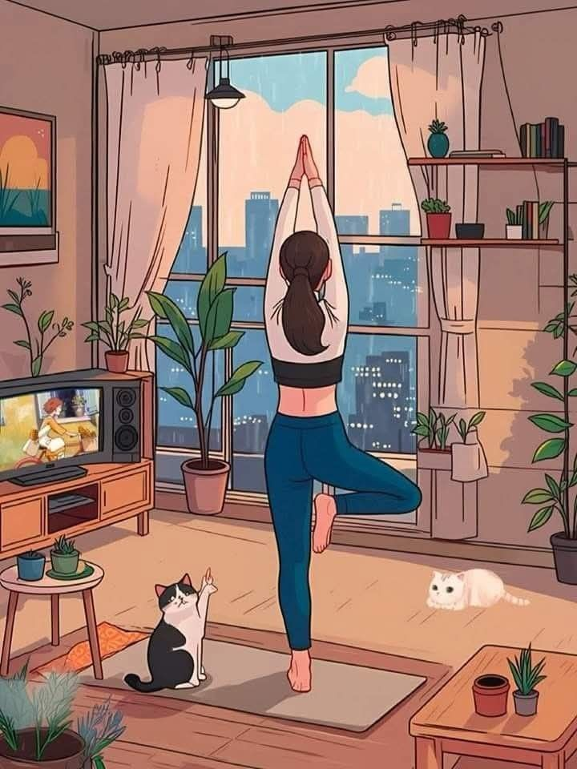
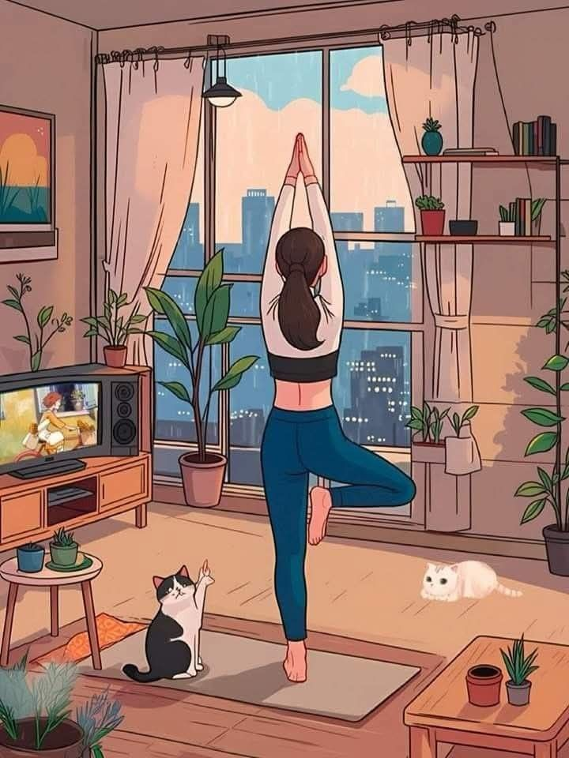

Deportes
Actualmente me gusta practicar yoga. En mis tiempos libres, disfruto ir a caminar para despejar la mente y mantenerme activa.
Actualmente me gusta practicar yoga. En mis tiempos libres, disfruto ir a caminar para despejar la mente y mantenerme activa.
